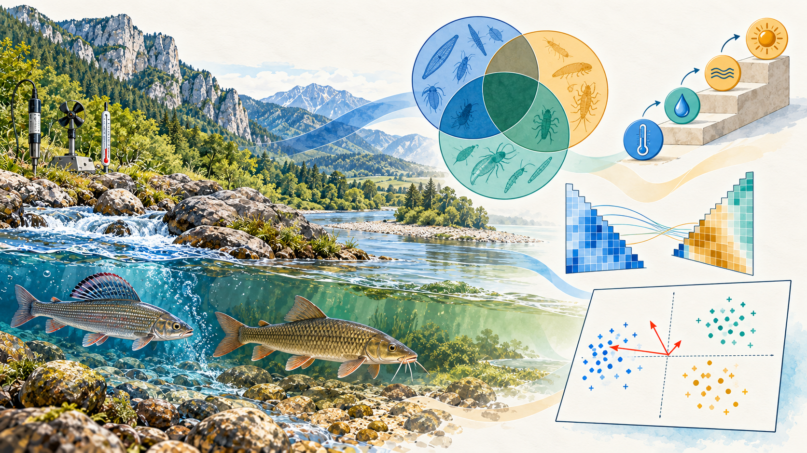
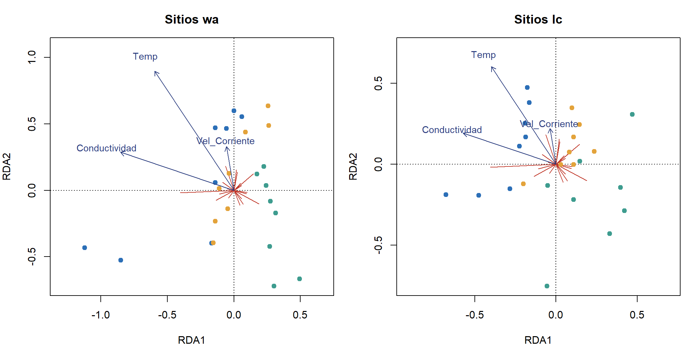
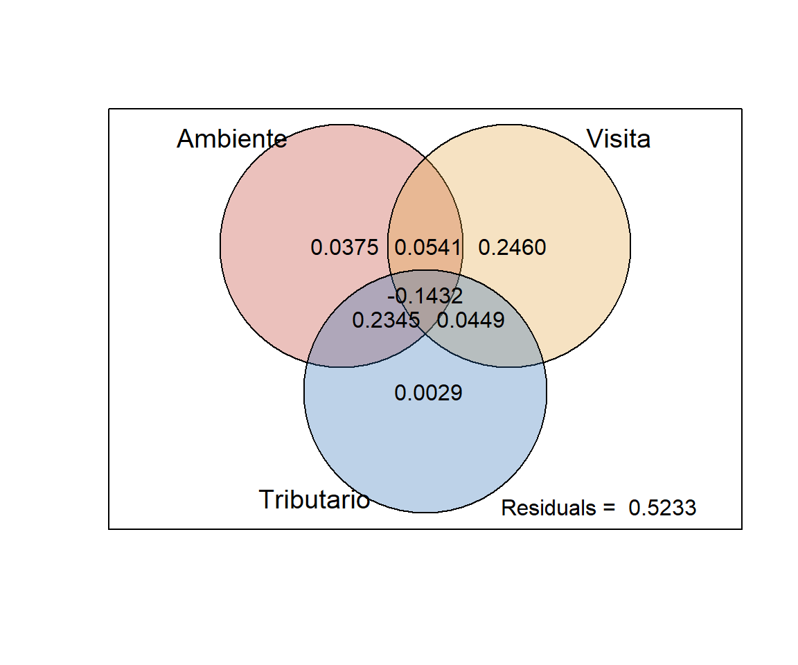
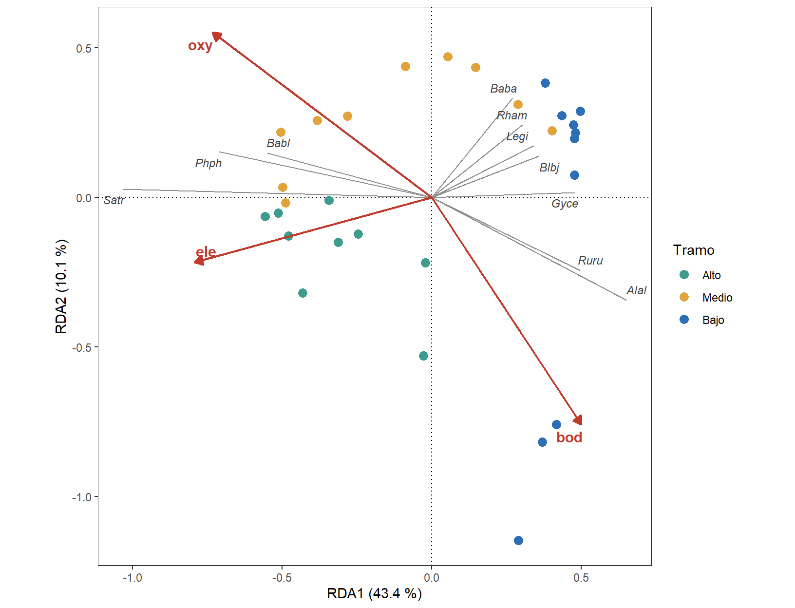

Material complementario · Taller 9
Más allá del núcleo de la RDA y la CCA · Multivariados II · Semana 4 · 2026-II
Cómo usar este material
Este documento amplía el Taller 9 · Ordenación restringida: RDA y CCA. No es necesario recorrerlo completo: cada sección es independiente y responde a una situación que puede aparecer al preparar el estudio de caso o el propio proyecto de grado.
| Situación | Sección |
|---|---|
Se quiere seleccionar variables con forward.sel(), como en el taller de 2024 |
1. Selección con forward.sel() |
| Se quiere comprobar que los coeficientes de los Pasos 2 y 10 del taller reconstruyen los ejes | 2. Coeficientes canónicos |
Se quiere dibujar el triplot con vegan y decidir entre sitios «wa» y «lc» |
3. El triplot con vegan base |
| Se necesita repartir la variación entre el ambiente, el tiempo y el sitio | 4. Partición de la varianza |
| Se quiere una RDA con Bray-Curtis u otra distancia no euclidiana | 5. db-RDA |
| Se quiere el mejor subconjunto de variables para una matriz de distancias | 6. BIOENV y la prueba de Mantel |
| Se sospecha que una variable actúa de forma no lineal | 7. Términos cuadráticos |
| Se quiere una RDA completa de otra comunidad, de principio a fin | 8. RDA de los peces del río Doubs |
| Se quiere practicar antes del estudio de caso | 9. Ejercicios de práctica |
El guardado automático de figuras y tablas está en los materiales complementarios de los Talleres 6, 7 y 8; con los objetos de este documento funciona igual.
Código
# Librerías requeridas
library(tidyverse)
library(readxl)
library(kableExtra)
library(vegan)
library(ggrepel) # Rótulos sin superposición
# Formato común de números y tablas
source("formato.R")
# Paletas del módulo
col_trib <- c(T1 = "#2C6FB7", T2 = "#E3A33B", T3 = "#3E9C8F")
col_tramo <- c(Alto = "#3E9C8F", Medio = "#E3A33B", Bajo = "#2C6FB7")Código
# Microalgas: matrices F, X y Y como en el Taller 9
alg <- read_excel(ruta_datos("Microalgas.xlsx"),
sheet = "Microalgas") %>%
rename(Fragilaria = Fragillaria,
Nitzschia = Nitzchia,
Surirella = Surilella,
Gyrosigma = Girosigma,
Achnanthes = Achnantes) %>%
mutate(Tributario = factor(Tributario),
Visita = factor(as.integer(sub(".*\\.", "", Cod)))) # T1.3 → 3
F_alg <- alg %>% select(Cod, Tributario, Visita)
X_alg <- alg %>% select(Amonio:Temp)
Y_alg <- alg %>% select(Fragilaria:Pinnularia)
# Y con Hellinger y X con log10(x + 1) salvo el pH
Y_hel <- decostand(Y_alg, method = "hellinger")
X_log <- X_alg %>%
mutate(across(-pH, ~ log10(.x + 1)))
# Modelos del Taller 9: completo y parsimonioso
rda_full <- rda(Y_hel ~ ., data = X_log)
rda_pars <- rda(Y_hel ~ Conductividad + Vel_Corriente + Temp,
data = X_log)1. Selección con forward.sel()
Pregunta: ¿Qué hace forward.sel() del paquete adespatial y en qué se parece a ordiR2step()?
En el taller de 2024, la selección de variables se hacía con forward.sel() (Blanchet et al., 2008). Su lógica es la misma de ordiR2step(), que se usó en el Taller 9: avanza agregando la variable que más aumenta el R² y se detiene cuando se cumple cualquiera de dos condiciones:
- la variable que entra ya no es significativa (
alpha = 0.05), o - el R² ajustado del modelo supera el del modelo completo (
adjR2thresh).
El segundo criterio es el que evita el sobreajuste: un modelo reducido no debería explicar más que el modelo con todas las variables.
Código
# Selección hacia adelante con doble criterio (requiere el paquete adespatial)
library(adespatial)
R2a_full <- RsquareAdj(rda_full)$adj.r.squared # umbral: R² ajustado del modelo completo
forward.sel(Y = Y_hel,
X = X_log,
adjR2thresh = R2a_full,
alpha = 0.05,
nperm = 999)Código
# El mismo doble criterio con ordiR2step() de vegan
rda0 <- rda(Y_hel ~ 1, data = X_log)
set.seed(2026)
sel_r2 <- ordiR2step(rda0,
scope = formula(rda_full),
R2scope = TRUE, # no superar el R² ajustado del completo
Pin = 0.05, # p de entrada
permutations = how(nperm = 999),
trace = 0)
sel_r2$anova %>%
as_tibble(rownames = "Paso") %>%
tabla()| Paso | R2.adj | Df | AIC | F | Pr(>F) |
|---|---|---|---|---|---|
| + Conductividad | 0.076 | 1 | -46.682 | 2.882 | 0.011 |
| + Vel_Corriente | 0.128 | 1 | -47.204 | 2.327 | 0.037 |
| <All variables> | 0.182 | NA | NA | NA | NA |
En el taller de 2024, forward.sel() llegó a las mismas dos variables que ordiR2step(): la conductividad y la velocidad de la corriente (R² ajustado = 0.128). Las diferencias prácticas entre las dos funciones son pocas:
forward.sel() (adespatial) |
ordiR2step() (vegan) |
|
|---|---|---|
| Entrada | Matrices numéricas Y y X | Una fórmula y un modelo nulo |
| Factores | No los acepta | Los acepta (por ejemplo, el tributario) |
| Salida | Tabla con R², R² ajustado y p acumulados | Modelo rda listo para graficar y probar |
| Instalación | Paquete adicional, con muchas dependencias | Viene con vegan |
NotaPor qué el Taller 9 usa
ordiR2step()
Da el mismo resultado sin instalar otro paquete, acepta factores y devuelve un modelo que se puede probar con anova() y graficar directamente. forward.sel() sigue siendo útil cuando se seleccionan cientos de variables (por ejemplo, vectores espaciales), para lo que fue diseñada.
Para discutir: si forward.sel() y ordistep() dieran modelos distintos con los mismos datos, ¿cuál se reportaría y qué se diría del otro?
2. Coeficientes canónicos
Pregunta: ¿Qué son los números que entrega coef() sobre una RDA?
Los Pasos 2 y 10 del Taller 9 comparan los coeficientes con las flechas. Aquí se comprueba qué son. En el taller de 2024 se leía coef() como un modelo lineal de la comunidad: «microalgas = 0.01·amonio − 0.18·nitrito + …». Esa lectura no es correcta. Los coeficientes canónicos son los pesos con que se combinan las variables X para construir cada eje restringido:
\[ \text{RDA1}_i = b_1\,\text{Conductividad}_i + b_2\,\text{Velocidad}_i + b_3\,\text{Temperatura}_i \]
con las variables centradas. Se comprueba con el modelo parsimonioso:
Código
# Coeficientes canónicos del modelo parsimonioso
b_pars <- coef(rda_pars)
# Variables X centradas, multiplicadas por los coeficientes
X3_c <- X_log %>%
select(Conductividad, Vel_Corriente, Temp) %>%
as.matrix() %>%
scale(scale = FALSE) # solo centrar
lc_mano <- X3_c %*% b_pars
# Coordenadas «lc» de los sitios sin escalamiento
lc_vegan <- scores(rda_pars,
display = "lc",
scaling = 0,
choices = 1:3)
c(iguales = all.equal(unname(lc_mano), unname(lc_vegan), check.attributes = FALSE))iguales
TRUE Los coeficientes reproducen exactamente las coordenadas «lc»: dicen cómo se construye el eje, no cuánto cambia la abundancia de cada género.
2.1 Coeficientes comparables: X estandarizada
Código
# Coeficientes con las X en sus escalas (log10) y con las X estandarizadas
X3_z <- X_log %>%
select(Conductividad, Vel_Corriente, Temp) %>%
scale() %>%
as.data.frame()
rda_pars_z <- rda(Y_hel ~ Conductividad + Vel_Corriente + Temp,
data = X3_z)
tibble(Variable = rownames(b_pars),
`DE de X` = unname(apply(X3_c, 2, sd)),
RDA1 = unname(b_pars[, 1]),
RDA1_estand = unname(coef(rda_pars_z)[, 1]),
RDA2_estand = unname(coef(rda_pars_z)[, 2])) %>%
tabla(col.names = c("Variable", "DE de X", "RDA1 (escala de X)",
"RDA1 (X estandarizada)",
"RDA2 (X estandarizada)"))| Variable | DE de X | RDA1 (escala de X) | RDA1 (X estandarizada) | RDA2 (X estandarizada) |
|---|---|---|---|---|
| Conductividad | 0.112 | -2.714 | -0.303 | -0.188 |
| Vel_Corriente | 0.120 | 1.626 | 0.195 | 0.184 |
| Temp | 0.025 | 1.016 | 0.026 | 0.252 |
Código
# Valores para el texto
bz <- coef(rda_pars_z)Con X en su escala, la temperatura tiene coeficientes grandes solo porque su desviación estándar es pequeña (0.025 en log10). Al estandarizar, los coeficientes se vuelven comparables: la conductividad pesa más en el RDA1 (-0.30) y la temperatura en el RDA2 (0.25), lo mismo que mostraban las flechas del triplot. Las flechas (display = "bp") son correlaciones entre cada X y los ejes, y suelen ser más fáciles de leer que los coeficientes; cuando las X están correlacionadas, los coeficientes pueden incluso cambiar de signo respecto de las flechas.
Para discutir: ¿qué ventaja tendría reportar las correlaciones (flechas) en lugar de los coeficientes en un artículo?
3. El triplot con vegan base: sitios «wa» o «lc»
Pregunta: ¿Qué cambia en el triplot si los sitios se dibujan como combinaciones lineales de X («lc») en lugar de promedios ponderados de las especies («wa»)?
El Taller 9 grafica los sitios «wa», que es lo que hace plot() de vegan por defecto. En el taller de 2024 se usaban los «lc» (display = c("sp", "lc", "cn")). Las dos opciones son válidas y responden cosas distintas:
| Coordenadas | Cómo se calculan | Muestran |
|---|---|---|
| «wa» | Promedios ponderados de las coordenadas de los géneros | Dónde queda cada sitio según su comunidad |
| «lc» | Combinación lineal de las X con los coeficientes canónicos | Dónde lo ubica el modelo según su ambiente |
Código
# Coordenadas que no cambian entre los dos paneles
sp2 <- scores(rda_pars, display = "species", scaling = 2)
bp2 <- scores(rda_pars, display = "bp", scaling = 2)
# Dos triplots con vegan base: sitios «wa» y «lc»
par(mfrow = c(1, 2),
mar = c(4, 4, 3, 1))
for (tipo in c("wa", "lc")) {
sit2 <- scores(rda_pars, display = tipo, scaling = 2) # sitios «wa» o «lc»
mult <- 0.8 * max(abs(sit2)) / max(abs(bp2)) # flechas a la escala de los sitios
plot(sit2,
type = "n",
asp = 1,
xlim = range(c(sit2[, 1], bp2[, 1] * mult * 1.2)),
ylim = range(c(sit2[, 2], bp2[, 2] * mult * 1.2)),
main = paste("Sitios", tipo))
abline(h = 0, v = 0, lty = 3)
arrows(0, 0,
sp2[, 1],
sp2[, 2],
length = 0, # géneros como líneas desde el origen
col = "#C0392B")
points(sit2,
pch = 19,
col = col_trib[F_alg$Tributario])
arrows(0, 0,
bp2[, 1] * mult,
bp2[, 2] * mult,
length = 0.08,
col = "#2C3E80")
text(bp2 * mult * 1.12,
labels = rownames(bp2),
col = "#2C3E80",
cex = 0.9)
}
par(mfrow = c(1, 1))
Código
# Correlación entre las coordenadas «lc» y «wa» en cada eje
r_lc_wa <- diag(cor(scores(rda_pars, display = "lc"),
scores(rda_pars, display = "wa")))
round(r_lc_wa, 2)RDA1 RDA2
0.78 0.67 Con este modelo, las dos versiones se parecen poco: la correlación entre «lc» y «wa» es 0.78 en el RDA1 y 0.67 en el RDA2. Con «lc», los sitios se ordenan solo por su ambiente: los de T1 forman una franja a la izquierda, del lado de la conductividad, y quedan más cerca del origen, porque dependen de tres variables; con «wa», se dispersan más, según lo que cada sustrato tenía en realidad (por ejemplo, las dos primeras visitas de T1 se alejan mucho más). Cuanto menor es el R² del modelo, más se separan las dos versiones.
TipCuál usar
Si la pregunta es qué predice el ambiente, se grafican los «lc» (Legendre y Legendre, 2012, los recomiendan para el triplot). Si la pregunta es dónde queda cada comunidad respecto del ambiente, se grafican los «wa», que además son más robustos al ruido en X. En cualquier caso, se declara cuál se usó.
NotaGéneros como líneas
En una RDA, cada género se dibuja como una línea desde el origen: su abundancia (Hellinger) aumenta en esa dirección, porque la RDA supone respuestas lineales. En la CCA, el punto de cada género marca su óptimo. Las funciones auxiliares de Borcard et al. (2018), como triplot.rda(), dibujan así los géneros; en R 4.2 o posterior esa función se detiene con el error «the condition has length > 1» y por eso no se usa en el módulo.
Para discutir: en una figura de tesis, ¿qué ventaja tendría mostrar los dos paneles de la Figura 1 juntos?
4. Partición de la varianza: ambiente, visita y tributario
Pregunta: ¿Cuánto de la composición explica cada conjunto de variables por sí solo, y cuánto comparten?
En el Taller 9, la RDA parcial removió la visita para ver el efecto del ambiente. varpart() generaliza esa idea a dos, tres o cuatro conjuntos de variables explicativas y reparte la variación en fracciones (Peres-Neto et al., 2006):
Código
# Partición entre el ambiente (3 X), la visita y el tributario
X3 <- X_log %>% select(Conductividad, Vel_Corriente, Temp)
vp <- varpart(Y_hel,
X3,
~ Visita,
~ Tributario,
data = F_alg)
vp$part$indfract %>%
as_tibble(rownames = "Fracción") %>%
select(Fracción, Df, Adj.R.square, Testable) %>%
tabla(col.names = c("Fracción", "gl", "R² ajustado", "Se puede probar"))| Fracción | gl | R² ajustado | Se puede probar |
|---|---|---|---|
| [a] = X1 | X2+X3 | 3 | 0.038 | TRUE |
| [b] = X2 | X1+X3 | 7 | 0.246 | TRUE |
| [c] = X3 | X1+X2 | 2 | 0.003 | TRUE |
| [d] | 0 | 0.054 | FALSE |
| [e] | 0 | 0.045 | FALSE |
| [f] | 0 | 0.234 | FALSE |
| [g] | 0 | -0.143 | FALSE |
| [h] = Residuals | NA | 0.523 | FALSE |
Código
# Diagrama de Venn de las fracciones
plot(vp,
Xnames = c("Ambiente", "Visita", "Tributario"),
bg = c("#C0392B", "#E3A33B", "#2C6FB7"),
alpha = 80,
digits = 2,
cutoff = -Inf)
Código
# Prueba de las fracciones puras del ambiente y del tributario
d_alg <- bind_cols(X3, F_alg)
set.seed(2026)
p_amb_pura <- anova(rda(Y_hel ~ Conductividad +
Vel_Corriente + Temp +
Condition(Visita) +
Condition(Tributario),
data = d_alg),
permutations = how(nperm = 999))
set.seed(2026)
p_trib_pura <- anova(rda(Y_hel ~ Tributario +
Condition(Visita) +
Condition(Conductividad + Vel_Corriente + Temp),
data = d_alg),
permutations = how(nperm = 999))
# Valores para el texto
fr <- vp$part$indfract$Adj.R.square
c(p_ambiente_pura = p_de(p_amb_pura),
p_tributario_pura = p_de(p_trib_pura)) p_ambiente_pura p_tributario_pura
0.201 0.402 Tres lecturas:
- La visita es la fracción pura más grande (0.246): el tiempo de colonización estructura la comunidad por sí solo, como mostró la RDA parcial del Taller 9.
- El ambiente y el tributario comparten casi todo (fracción [f] = 0.234). Sus fracciones puras son pequeñas y no significativas (ambiente: 0.038, p = 0.201; tributario: 0.003, p = 0.402). Las tres variables ambientales describen a los tributarios: conocer la conductividad, la velocidad y la temperatura equivale casi a saber de qué tributario viene la muestra.
- La fracción [g], común a los tres conjuntos, es negativa (-0.143). Las fracciones compartidas se obtienen por resta y no se prueban; un valor negativo indica que los conjuntos se «suprimen» entre sí y se interpreta como cero.
AdvertenciaDiseño (RA1): lo que la partición no puede separar
Con tres tributarios, el ambiente y el tributario están confundidos: la partición no puede decir si las diferencias entre tributarios se deben a su química o a cualquier otra cosa propia de cada cauce (sombra, sustrato, historia de colonización). Separarlos exigiría más tributarios, con ambientes que se crucen. La partición describe ese límite; no lo resuelve.
Para discutir: en un estudio de macroalgas con tres ecorregiones y variables de nutrientes medidas en cada sitio, ¿qué fracción se esperaría que fuera grande? ¿Qué diseño permitiría separar la ecorregión de los nutrientes?
5. db-RDA: la RDA sobre la disimilitud del NMDS
Pregunta: ¿Qué pasa si la RDA se hace con la misma disimilitud de Bray-Curtis del NMDS del Taller 8, en lugar de Hellinger?
La RDA basada en distancias (db-RDA; Legendre y Anderson, 1999) hace un PCoA de cualquier matriz de distancias y luego una RDA sobre sus coordenadas. Así se combina una distancia con sentido ecológico (Bray-Curtis, Jaccard, Gower) con todo lo visto en el Taller 9: R² ajustado, pruebas por permutación, VIF y selección.
Código
# Matriz con la transformación del NMDS del Taller 8 (raíz cuadrada y Wisconsin)
Y_wis <- wisconsin(sqrt(Y_alg))
# db-RDA completa y con las tres variables del Taller 9
db_full <- dbrda(Y_wis ~ .,
data = X_log,
distance = "bray")
db_pars <- dbrda(Y_wis ~ Conductividad + Vel_Corriente + Temp,
data = X_log,
distance = "bray")
db_full
Call: dbrda(formula = Y_wis ~ Amonio + Nitrito + Nitrato + Oxigeno + pH +
Conductividad + Caudal + Vel_Corriente + Luz + Temp, data = X_log, distance
= "bray")
Inertia Proportion Rank RealDims
Total 1.3423 1.0000
Constrained 0.7286 0.5428 10 9
Unconstrained 0.6137 0.4572 13 10
Inertia is squared Bray distance
Eigenvalues for constrained axes:
dbRDA1 dbRDA2 dbRDA3 dbRDA4 dbRDA5 dbRDA6 dbRDA7 dbRDA8
0.27960 0.21802 0.08035 0.05234 0.04297 0.02807 0.01935 0.00966
dbRDA9 idbRDA1
0.00248 -0.00423
Eigenvalues for unconstrained axes:
MDS1 MDS2 MDS3 MDS4 MDS5 MDS6 MDS7 MDS8 MDS9 MDS10
0.3352 0.1121 0.0600 0.0380 0.0328 0.0185 0.0135 0.0101 0.0040 0.0029
iMDS1 iMDS2 iMDS3
-0.0006 -0.0017 -0.0109 La salida trae dos novedades frente a una RDA:
RealDimsy los ejes con prefijoi(idbRDA1,iMDS1…): son los autovalores negativos, la parte de Bray-Curtis que no cabe en un espacio euclidiano (como en el PCoA del material complementario del Taller 8). Aquí son 4 y pequeños.Inertia is squared Bray distance: la inercia ya no es una varianza de Hellinger, sino la suma de distancias de Bray-Curtis al cuadrado.
Código
# R², pruebas y comparación con la RDA de Hellinger
set.seed(2026)
glob_db_full <- anova(db_full, permutations = how(nperm = 999))
set.seed(2026)
glob_db_pars <- anova(db_pars, permutations = how(nperm = 999))
set.seed(2026)
glob_rda_full <- anova(rda_full, permutations = how(nperm = 999))
set.seed(2026)
glob_rda_pars <- anova(rda_pars, permutations = how(nperm = 999))
tibble(Indicador = c("Modelo completo: R² (fracción restringida)",
"Modelo completo: R² ajustado",
"Modelo completo: p global",
"Modelo con 3 X: R² ajustado",
"Modelo con 3 X: p global"),
`RDA (Hellinger)` = c(rda_full$CCA$tot.chi / rda_full$tot.chi,
RsquareAdj(rda_full)$adj.r.squared,
p_de(glob_rda_full),
RsquareAdj(rda_pars)$adj.r.squared,
p_de(glob_rda_pars)),
`db-RDA (Bray-Curtis)` = c(db_full$CCA$tot.chi / db_full$tot.chi,
RsquareAdj(db_full)$adj.r.squared,
p_de(glob_db_full),
RsquareAdj(db_pars)$adj.r.squared,
p_de(glob_db_pars))) %>%
tabla()| Indicador | RDA (Hellinger) | db-RDA (Bray-Curtis) |
|---|---|---|
| Modelo completo: R² (fracción restringida) | 0.538 | 0.543 |
| Modelo completo: R² ajustado | 0.182 | 0.191 |
| Modelo completo: p global | 0.060 | 0.064 |
| Modelo con 3 X: R² ajustado | 0.183 | 0.196 |
| Modelo con 3 X: p global | 0.002 | 0.001 |
Código
# Concordancia entre las configuraciones de sitios de las dos técnicas
set.seed(2026)
pro_db <- protest(rda_pars, db_pars, permutations = 999)
c(r = pro_db$t0, p = pro_db$signif) r p
0.962357 0.001000 Las dos técnicas cuentan la misma historia: la db-RDA con tres variables explica el 19.6 % (R² ajustado; p = 0.001) y su configuración de sitios coincide con la de la RDA (Procrustes r = 0.962). El modelo completo vuelve a quedar en la frontera del 5 % (p = 0.064), como en el Taller 9.
5.1 Selección en la db-RDA
Código
# Selección desde el modelo nulo con cuatro semillas
db0 <- dbrda(Y_wis ~ 1,
data = X_log,
distance = "bray")
sel_db <- map_dfr(c(2026, 123, 1, 3), function(s) {
set.seed(s)
st <- ordistep(db0,
scope = formula(db_full),
permutations = how(nperm = 999),
trace = 0)
tibble(Semilla = s,
Variables = paste(sub("^\\+ ", "", rownames(st$anova)), collapse = " + "),
`p de la última` = tail(st$anova$`Pr(>F)`, 1))
})
sel_db %>% tabla()| Semilla | Variables | p de la última |
|---|---|---|
| 2026 | Temp + Nitrito | 0.028 |
| 123 | Conductividad + Temp + Vel_Corriente | 0.039 |
| 1 | Conductividad + Temp + Vel_Corriente | 0.039 |
| 3 | Temp + Nitrito | 0.032 |
Código
# Primer paso: p de cada variable al entrar sola
set.seed(2026)
paso1_db <- add1(db0,
scope = formula(db_full),
test = "permutation",
permutations = how(nperm = 999))
paso1_db[c("Temp", "Conductividad", "Nitrito"), c("F", "Pr(>F)")] F Pr(>F)
Temp 3.0459 0.018 *
Conductividad 2.8596 0.020 *
Nitrito 2.3912 0.038 *
---
Signif. codes: 0 '***' 0.001 '**' 0.01 '*' 0.05 '.' 0.1 ' ' 1La selección depende de la semilla: con unas entra el mismo trío del Taller 9 y con otras se detiene en temperatura + nitrito. Al revisar los p del primer paso, la temperatura (p = 0.018) y la conductividad (p = 0.020) están muy cerca, y el orden en que entran cambia lo que se agrega después. Es la misma lección de la CCA en el Taller 9: cuando dos candidatas están empatadas, el modelo «seleccionado» no es único, y conviene reportar los candidatos razonables, no uno solo.
Nota
capscale() frente a dbrda()
vegan tiene dos funciones de db-RDA. capscale() descarta los autovalores negativos y permite proyectar las especies; dbrda() los conserva y es la implementación fiel de Legendre y Anderson (1999). Con pocos autovalores negativos, como aquí, dan casi lo mismo. Con Gower u otras distancias muy poco euclidianas, se prefiere dbrda() o una corrección de Lingoes o Cailliez (add = TRUE).
Para discutir: en un estudio de bentos de fondos blandos con muchos ceros, ¿por qué se preferiría una db-RDA con Bray-Curtis a una RDA de Hellinger? ¿Qué se pierde?
6. BIOENV y la prueba de Mantel
Pregunta: ¿Qué subconjunto de variables ambientales reproduce mejor las disimilitudes de la comunidad, y se puede probar esa relación?
BIOENV (Clarke y Ainsworth, 1993) prueba todos los subconjuntos posibles de X: para cada uno calcula la distancia euclidiana entre las muestras (con X estandarizada) y su correlación de Spearman (ρ) con la disimilitud de la comunidad. Devuelve el subconjunto con la mayor ρ.
Código
# Disimilitud de la comunidad (la del NMDS del Taller 8)
d_bray <- vegdist(Y_wis, method = "bray")
# BIOENV con las 10 variables ambientales (1023 subconjuntos)
bio <- bioenv(d_bray,
X_log)1023 possible subsets (this may take time...)Código
res_bio <- summary(bio)
tibble(Variables = res_bio$variables,
Tamaño = res_bio$size,
rho = res_bio$correlation) %>%
tabla(col.names = c("Mejor subconjunto", "Variables", "ρ de Spearman"))| Mejor subconjunto | Variables | ρ de Spearman |
|---|---|---|
| Luz | 1 | 0.192 |
| Nitrito Luz | 2 | 0.233 |
| Nitrito Conductividad Luz | 3 | 0.236 |
| Nitrito Conductividad Luz Temp | 4 | 0.225 |
| Nitrito pH Conductividad Luz Temp | 5 | 0.198 |
| Nitrito pH Conductividad Caudal Luz Temp | 6 | 0.171 |
| Amonio Nitrito pH Conductividad Caudal Luz Temp | 7 | 0.152 |
| Amonio Nitrito Oxigeno pH Conductividad Caudal Luz Temp | 8 | 0.129 |
| Amonio Nitrito Nitrato Oxigeno pH Conductividad Caudal Luz Temp | 9 | 0.093 |
| Amonio Nitrito Nitrato Oxigeno pH Conductividad Caudal Vel_Corriente Luz Temp | 10 | 0.058 |
Código
# Mejor subconjunto global
mejor <- names(X_log)[bio$models[[bio$whichbest]]$best]
rho_mejor <- max(res_bio$correlation)
mejor[1] "Nitrito" "Conductividad" "Luz" Código
# El mismo análisis con las variables en sus unidades
bio_u <- bioenv(d_bray,
X_alg)1023 possible subsets (this may take time...)Código
mejor_u <- names(X_alg)[bio_u$models[[bio_u$whichbest]]$best]
rho_u <- max(summary(bio_u)$correlation)El mejor subconjunto es Nitrito + Conductividad + Luz (ρ = 0.236). No coincide con la RDA (conductividad, velocidad y temperatura) porque busca otra cosa: concordancia de rangos entre dos matrices de distancias, no varianza explicada. Además, depende de la escala de X: con X_alg en sus unidades, el mejor subconjunto es Nitrito + Conductividad + Luz con ρ = 0.280, así que se declara qué matriz se usó.
6.1 Mantel después de BIOENV: un p sesgado
La tentación es probar ese ρ con una prueba de Mantel:
Código
# Mantel entre la comunidad y el mejor subconjunto de BIOENV
set.seed(2026)
mant_mejor <- mantel(d_bray,
dist(scale(X_log[, mejor])),
method = "spearman",
permutations = 999)
c(rho = mant_mejor$statistic, p = mant_mejor$signif) rho p
0.2358608 0.0420000 El p (0.042) parece significativo, pero no es válido: el subconjunto se eligió porque tenía la ρ más alta entre 1023. Para ver cuánto puede dar el azar, se repite BIOENV con 10 variables de números aleatorios:
Código
# BIOENV con 10 variables aleatorias (30 repeticiones)
set.seed(2026)
rho_azar <- replicate(30, {
X_azar <- as.data.frame(matrix(rnorm(nrow(Y_alg) * 10), ncol = 10))
max(summary(bioenv(d_bray, X_azar))$correlation)
})1023 possible subsets (this may take time...)
1023 possible subsets (this may take time...)
1023 possible subsets (this may take time...)
1023 possible subsets (this may take time...)
1023 possible subsets (this may take time...)
1023 possible subsets (this may take time...)
1023 possible subsets (this may take time...)
1023 possible subsets (this may take time...)
1023 possible subsets (this may take time...)
1023 possible subsets (this may take time...)
1023 possible subsets (this may take time...)
1023 possible subsets (this may take time...)
1023 possible subsets (this may take time...)
1023 possible subsets (this may take time...)
1023 possible subsets (this may take time...)
1023 possible subsets (this may take time...)
1023 possible subsets (this may take time...)
1023 possible subsets (this may take time...)
1023 possible subsets (this may take time...)
1023 possible subsets (this may take time...)
1023 possible subsets (this may take time...)
1023 possible subsets (this may take time...)
1023 possible subsets (this may take time...)
1023 possible subsets (this may take time...)
1023 possible subsets (this may take time...)
1023 possible subsets (this may take time...)
1023 possible subsets (this may take time...)
1023 possible subsets (this may take time...)
1023 possible subsets (this may take time...)
1023 possible subsets (this may take time...)Código
c(mediana = median(rho_azar), maximo = max(rho_azar),
prop_mayor = mean(rho_azar >= rho_mejor)) mediana maximo prop_mayor
0.2491971 0.4137686 0.5666667 Con variables que no tienen nada que ver con las microalgas, el mejor subconjunto alcanza una ρ mediana de 0.249, y en el 57 % de las repeticiones supera a la ρ real (0.236). La relación encontrada por BIOENV no es mayor que la que daría el azar con 10 variables. BIOENV es una herramienta exploratoria; si se quiere un p, se usa una ordenación restringida con selección (Taller 9) o una prueba de Mantel con un subconjunto definido antes de mirar los datos.
Código
# Mantel con las tres variables del Taller 9, definidas por otro criterio
set.seed(2026)
mant_tres <- mantel(d_bray,
dist(scale(X3)),
method = "spearman",
permutations = 999)
c(rho = mant_tres$statistic, p = mant_tres$signif) rho p
0.07698064 0.19600000 Con las tres variables de la RDA, la correlación de Mantel es baja (ρ = 0.077; p = 0.196). No contradice a la RDA: Mantel resume la relación entre todas las distancias en un solo número y tiene poca potencia (Legendre et al., 2015). Por eso se prefiere la RDA o la db-RDA para preguntas sobre la composición.
Para discutir: si un artículo reporta «BIOENV seleccionó salinidad y profundidad (ρ = 0.45; Mantel p = 0.01)», ¿qué se le preguntaría a los autores?
7. ¿Una respuesta no lineal? Términos cuadráticos
Pregunta: En el Taller 8, ordisurf() sugirió que la temperatura se relaciona de forma no lineal con el NMDS. ¿Mejora la RDA si se agrega un término cuadrático?
La RDA supone respuestas lineales, pero se puede incluir la curvatura agregando el cuadrado de una variable como otra columna de X. poly() lo hace con polinomios ortogonales, que no están correlacionados entre sí:
Código
# RDA con la temperatura lineal y cuadrática
rda_cuad <- rda(Y_hel ~ Conductividad + Vel_Corriente + poly(Temp, 2),
data = X_log)
set.seed(2026)
marg_cuad <- anova(rda_cuad,
by = "margin",
permutations = how(nperm = 999))
c(R2_aj_lineal = RsquareAdj(rda_pars)$adj.r.squared,
R2_aj_cuadratico = RsquareAdj(rda_cuad)$adj.r.squared) R2_aj_lineal R2_aj_cuadratico
0.1829084 0.1789253 Código
marg_cuadPermutation test for rda under reduced model
Marginal effects of terms
Permutation: free
Number of permutations: 999
Model: rda(formula = Y_hel ~ Conductividad + Vel_Corriente + poly(Temp, 2), data = X_log)
Df Variance F Pr(>F)
Conductividad 1 0.021722 4.2600 0.005 **
Vel_Corriente 1 0.012739 2.4984 0.035 *
poly(Temp, 2) 2 0.016811 1.6484 0.099 .
Residual 19 0.096881
---
Signif. codes: 0 '***' 0.001 '**' 0.01 '*' 0.05 '.' 0.1 ' ' 1El término cuadrático no mejora el modelo: el R² ajustado baja de 0.183 a 0.179, y la temperatura con sus dos términos deja de ser significativa (p = 0.099). La curvatura que mostró ordisurf() estaba en la relación de la temperatura con el mapa del NMDS, no en la respuesta de cada género; con 24 muestras, un parámetro más cuesta más de lo que aporta.
TipCuándo vale la pena
Los términos cuadráticos sirven cuando hay razones para esperar un óptimo dentro del gradiente medido (por ejemplo, la salinidad en un estuario para especies estuarinas) y hay suficientes muestras. Si muchas especies tienen óptimos, el gradiente probablemente es largo, y la CCA es la opción natural (Taller 9, Parte 5).
8. RDA de los peces del río Doubs
Pregunta: ¿Qué variables ambientales explican la composición de peces a lo largo del río Doubs, y cuánto?
El material complementario del Taller 8 ordenó esta comunidad con un NMDS y le ajustó las variables con envfit(). Ahora se hace el análisis directo, con los mismos datos: 29 sitios con peces, 27 especies y 11 variables ambientales (Verneaux, 1973; datos en Borcard et al., 2018).
Código
# Especies y variables ambientales, sin el sitio sin peces
spe <- read_excel(ruta_datos("peces_francia.xlsx"),
sheet = "DoubsSpe") %>%
as.data.frame()
env <- read_excel(ruta_datos("peces_francia.xlsx"),
sheet = "DoubsEnv") %>%
as.data.frame()
rownames(spe) <- rownames(env) <- spe$Sites
spe <- spe %>% select(-Sites)
env <- env %>% select(-Sites)
spe <- spe[rowSums(spe) > 0, ]
env <- env[rownames(spe), ]
# Tramo por la distancia a la fuente (como en el complemento del Taller 8)
tramo <- cut(env$dfs,
breaks = c(0, 100, 250, Inf),
labels = c("Alto", "Medio", "Bajo"))
# Longitud del gradiente y matriz de Hellinger
dca_d <- decorana(spe)
spe_hel <- decostand(spe, method = "hellinger")
c(sitios = nrow(spe),
especies = ncol(spe),
DCA1 = round(diff(range(scores(dca_d, display = "sites")[, 1])), 2)) sitios especies DCA1
29.00 27.00 3.86 El primer eje del DCA mide 3.9 DE: un gradiente intermedio, en el que la RDA de Hellinger y la CCA son razonables. Se usa la RDA para seguir los mismos pasos del Taller 9.
8.1 Modelo completo y colinealidad
La distancia a la fuente (dfs) se excluye: no es una condición del agua sino la posición en el río, y casi todas las demás variables cambian con ella.
Código
# RDA con las 10 variables ambientales (sin la distancia a la fuente)
env_d <- env %>% select(-dfs)
rda_d_full <- rda(spe_hel ~ .,
data = env_d)
set.seed(2026)
glob_d_full <- anova(rda_d_full, permutations = how(nperm = 999))
vif_d <- sort(vif.cca(rda_d_full), decreasing = TRUE)
c(R2 = RsquareAdj(rda_d_full)$r.squared,
R2_aj = RsquareAdj(rda_d_full)$adj.r.squared,
p = p_de(glob_d_full)) R2 R2_aj p
0.7341007 0.5863788 0.0010000 Código
tibble(Variable = names(vif_d),
VIF = unname(vif_d)) %>%
tabla(digits = 1)| Variable | VIF |
|---|---|
| amm | 30.7 |
| pho | 25.4 |
| bod | 17.8 |
| ele | 16.2 |
| nit | 16.1 |
| oxy | 6.9 |
| dis | 6.7 |
| har | 3.3 |
| slo | 1.9 |
| pH | 1.2 |
A diferencia de las microalgas, aquí el ambiente explica mucho (R² ajustado = 0.586; p = 0.001) y hay colinealidad grave: el amonio (VIF = 30.7) y los fosfatos (25.4) superan 10. Los dos miden lo mismo: los vertimientos del tramo bajo que se vieron en el complemento del Taller 8.
8.2 Selección y modelo parsimonioso
Código
# Selección con ordiR2step() y con ordistep()
rda_d0 <- rda(spe_hel ~ 1, data = env_d)
set.seed(2026)
sel_d_r2 <- ordiR2step(rda_d0,
scope = formula(rda_d_full),
permutations = how(nperm = 999),
trace = 0)
set.seed(2026)
sel_d_p <- ordistep(rda_d0,
scope = formula(rda_d_full),
permutations = how(nperm = 999),
trace = 0)
sel_d_r2$anova %>%
as_tibble(rownames = "Paso") %>%
tabla()| Paso | R2.adj | Df | AIC | F | Pr(>F) |
|---|---|---|---|---|---|
| + ele | 0.303 | 1 | -28.504 | 13.183 | 0.001 |
| + oxy | 0.453 | 1 | -34.617 | 8.393 | 0.001 |
| + bod | 0.540 | 1 | -38.786 | 5.926 | 0.001 |
| <All variables> | 0.586 | NA | NA | NA | NA |
Código
# Variables que agrega ordistep()
rownames(sel_d_p$anova)[1] "+ ele" "+ oxy" "+ bod" "+ slo"Código
# Diagnóstico del modelo elegido por ordiR2step()
rda_d <- sel_d_r2
set.seed(2026)
ejes_d <- anova(rda_d, by = "axis", permutations = how(nperm = 999))
pct_d <- 100 * eigenvals(rda_d) / rda_d$tot.chi
c(R2_aj = RsquareAdj(rda_d)$adj.r.squared,
VIF_max = max(vif.cca(rda_d)),
RDA1 = unname(pct_d["RDA1"]),
RDA2 = unname(pct_d["RDA2"]),
PC1 = unname(pct_d["PC1"])) R2_aj VIF_max RDA1 RDA2 PC1
0.5401062 3.5443168 43.3847353 10.1230411 11.6127938 Código
ejes_dPermutation test for rda under reduced model
Forward tests for axes
Permutation: free
Number of permutations: 999
Model: rda(formula = spe_hel ~ ele + oxy + bod, data = env_d)
Df Variance F Pr(>F)
RDA1 1 0.218013 26.4142 0.001 ***
RDA2 1 0.050869 6.1633 0.001 ***
RDA3 1 0.027288 3.3062 0.004 **
Residual 25 0.206340
---
Signif. codes: 0 '***' 0.001 '**' 0.01 '*' 0.05 '.' 0.1 ' ' 1ordiR2step() se detiene en la elevación, el oxígeno y la DBO (R² ajustado = 0.540, frente a 0.586 del modelo completo); ordistep() agrega además la pendiente. Las tres variables dibujan los dos gradientes del río: el longitudinal (elevación, de la cabecera a la desembocadura) y el de contaminación orgánica (oxígeno frente a DBO). Ninguna tiene VIF mayor que 3.5, y los tres ejes son significativos.
8.3 Triplot
Código
# Coordenadas de sitios, especies y variables (escalamiento 2)
sit_d <- scores(rda_d,
display = "sites",
scaling = 2) %>%
as_tibble(rownames = "Sitio") %>%
mutate(Tramo = tramo)
esp_d <- scores(rda_d,
display = "species",
scaling = 2) %>%
as_tibble(rownames = "Especie") %>%
mutate(Largo = sqrt(RDA1^2 + RDA2^2)) %>%
slice_max(Largo, n = 10) # las 10 especies mejor representadas
bp_d <- scores(rda_d,
display = "bp",
scaling = 2) %>%
as_tibble(rownames = "Variable")
# Factores comunes para llevar especies y flechas a la escala de los sitios
lim_sit <- max(abs(c(sit_d$RDA1, sit_d$RDA2)))
mult_esp <- 0.9 * lim_sit / max(esp_d$Largo)
mult_bp <- 0.8 * lim_sit / max(sqrt(bp_d$RDA1^2 + bp_d$RDA2^2))Código
ggplot() +
geom_hline(yintercept = 0,
linetype = 3) +
geom_vline(xintercept = 0,
linetype = 3) +
geom_segment(data = esp_d,
aes(x = 0, y = 0,
xend = RDA1 * mult_esp,
yend = RDA2 * mult_esp),
colour = "grey55") +
geom_text_repel(data = esp_d,
aes(x = RDA1 * mult_esp,
y = RDA2 * mult_esp,
label = Especie),
fontface = "italic",
size = 3.2,
colour = "grey25") +
geom_point(data = sit_d,
aes(x = RDA1, y = RDA2, colour = Tramo),
size = 3) +
geom_segment(data = bp_d,
aes(x = 0, y = 0,
xend = RDA1 * mult_bp,
yend = RDA2 * mult_bp),
arrow = arrow(length = unit(0.25, "cm"),
type = "closed"),
linewidth = 0.8,
colour = "#C0392B") +
geom_text_repel(data = bp_d,
aes(x = RDA1 * mult_bp,
y = RDA2 * mult_bp,
label = Variable),
colour = "#C0392B",
fontface = "bold",
size = 4) +
scale_colour_manual(values = col_tramo) +
coord_equal() +
labs(x = paste0("RDA1 (", f1(pct_d["RDA1"]), " %)"),
y = paste0("RDA2 (", f1(pct_d["RDA2"]), " %)"),
colour = "Tramo") +
theme_bw() +
theme(panel.grid = element_blank())
Código
# Especies en los extremos del RDA1
esp_ord <- scores(rda_d, display = "species", scaling = 2) %>%
as_tibble(rownames = "Especie") %>%
arrange(RDA1)
list(lado_negativo = head(esp_ord$Especie, 3),
lado_positivo = tail(esp_ord$Especie, 3))$lado_negativo
[1] "Satr" "Phph" "Babl"
$lado_positivo
[1] "Gyce" "Ruru" "Alal"El RDA1 (43.4 % de la inercia) sigue a la elevación: los sitios del tramo alto quedan del lado negativo, con la trucha (Satr) y el piscardo (Phph), y los del tramo bajo del lado positivo, con especies de aguas cálidas y lentas como el alburno (Alal) y el rutilo (Ruru). El RDA2 (10.1 %) separa los sitios oxigenados de los que tienen alta DBO: los sitios con vertimientos del tramo bajo se apartan hacia la flecha de la DBO.
TipCómo reportar el resultado
La composición de peces de 29 sitios del río Doubs (transformación de Hellinger) se relacionó con 10 variables ambientales mediante un análisis de redundancia. El modelo completo explicó el 58,6 % de la variación (R² ajustado; p = 0,001; 999 permutaciones), con colinealidad entre el amonio y los fosfatos (VIF > 10). La selección hacia adelante con doble criterio (
ordiR2step()) retuvo la elevación, el oxígeno disuelto y la DBO (R² ajustado = 0,540; VIF ≤ 3,5), con tres ejes significativos que representaron el gradiente longitudinal del río y el de contaminación orgánica.
AdvertenciaDiseño (RA1): sitios que son vecinos
Los sitios del Doubs son puntos sucesivos de un mismo río: los vecinos se parecen por estar cerca, no solo por su ambiente (autocorrelación espacial). Las permutaciones libres tratan a los sitios como independientes, y los p son optimistas. Borcard et al. (2018, cap. 7) muestran cómo incorporar el espacio con vectores espaciales (MEM) y partición de la varianza; ese es el uso para el que se diseñó forward.sel().
Para discutir: en un río de la Sierra Nevada de Santa Marta, ¿qué variables harían el papel de la elevación y de la DBO? ¿Qué sitios se esperaría que se apartaran sobre el segundo eje?
9. Ejercicios de práctica (sin nota)
Para practicar antes del estudio de caso:
- Repita la partición de la sección 4 con solo dos conjuntos: el ambiente y la visita. Compare la fracción pura del ambiente con el R² ajustado de la RDA parcial del Taller 9 (0.272).
- Ajuste la db-RDA de la sección 5 con Jaccard (
distance = "jaccard",binary = TRUE). ¿Qué variables seleccionaordiR2step()? - Dibuje el triplot de la sección 3 con escalamiento 1. ¿Cuál de las dos versiones (sitios «wa» o «lc») separa mejor a T1?
- Ajuste una CCA del Doubs con las mismas tres variables (
cca(spe ~ ele + oxy + bod, data = env)) y compárela con la RDA medianteprotest(). ¿Qué indica la longitud del DCA sobre el resultado esperado? - Ajuste la RDA del Doubs incluyendo la distancia a la fuente. ¿Qué variable desplaza a la elevación en la selección y por qué?
- Con el mesozooplancton del estudio de caso del Taller 9, haga la partición de la varianza entre la salinidad y la malla. ¿Qué fracción es mayor?
Referencias
Blanchet, F. G., Legendre, P., & Borcard, D. (2008). Forward selection of explanatory variables. Ecology, 89(9), 2623–2632. https://doi.org/10.1890/07-0986.1
Borcard, D., Gillet, F., & Legendre, P. (2018). Numerical Ecology with R (2nd ed.). Springer. https://doi.org/10.1007/978-3-319-71404-2 — Fuente de los datos del río Doubs.
Clarke, K. R., & Ainsworth, M. (1993). A method of linking multivariate community structure to environmental variables. Marine Ecology Progress Series, 92, 205–219. https://doi.org/10.3354/meps092205
Dray, S., Bauman, D., Blanchet, G., Borcard, D., Clappe, S., Guénard, G., et al. (2024). adespatial: Multivariate Multiscale Spatial Analysis. https://CRAN.R-project.org/package=adespatial
Legendre, P., & Anderson, M. J. (1999). Distance-based redundancy analysis: testing multispecies responses in multifactorial ecological experiments. Ecological Monographs, 69(1), 1–24. https://doi.org/10.1890/0012-9615(1999)069[0001:DBRATM]2.0.CO;2
Legendre, P., Fortin, M.-J., & Borcard, D. (2015). Should the Mantel test be used in spatial analysis? Methods in Ecology and Evolution, 6(11), 1239–1247. https://doi.org/10.1111/2041-210X.12425
Legendre, P., & Legendre, L. (2012). Numerical Ecology (3rd ed.). Elsevier.
Oksanen, J., Simpson, G. L., Blanchet, F. G., Kindt, R., Legendre, P., Minchin, P. R., et al. (2025). vegan: Community Ecology Package. https://CRAN.R-project.org/package=vegan
Osorio Ávila, F. J., Rodríguez Barrios, J., & Montoya Moreno, Y. (2015). Sucesión de microalgas perifíticas en tributarios del río Gaira, Sierra Nevada de Santa Marta-Colombia. Acta Biológica Colombiana, 20(2), 119–131. https://doi.org/10.15446/abc.v20n2.41932 — Base de datos
Microalgas.Peres-Neto, P. R., Legendre, P., Dray, S., & Borcard, D. (2006). Variation partitioning of species data matrices: estimation and comparison of fractions. Ecology, 87(10), 2614–2625. https://doi.org/10.1890/0012-9658(2006)87[2614:VPOSDM]2.0.CO;2
Rodríguez-Barrios, J. (2023). Análisis de datos ecológicos y ambientales: aplicaciones con el programa R. Díaz de Santos. — Base de datos
peces_francia.xlsx.Verneaux, J. (1973). Cours d’eau de Franche-Comté (Massif du Jura). Recherches écologiques sur le réseau hydrographique du Doubs. Essai de biotypologie. Thèse d’État, Université de Besançon.
Nota
Las figuras y el código de este material son de elaboración propia a partir de las bases citadas; las variables aleatorias de la sección 6 son simuladas. No reproducen ejercicios ni código de las fuentes bibliográficas.